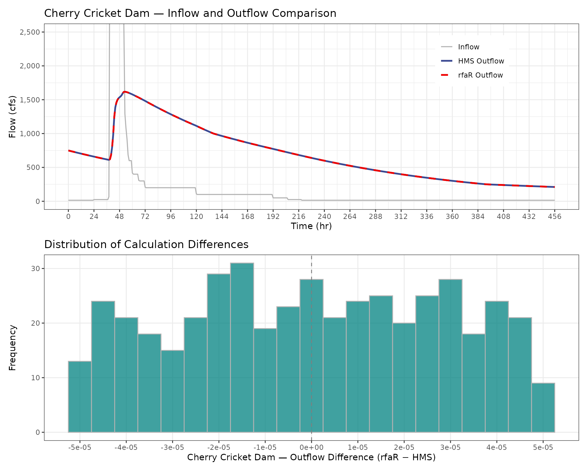

V7 - Modified-Puls Routing Validation
Source:vignettes/validation-mod_puls_routing.Rmd
validation-mod_puls_routing.RmdPurpose
Validate that mod_puls_routing() produces results
consistent with HEC-HMS Modified Puls routing for a benchmark dataset at
Cherry Cricket Dam. The comparison benchmark uses an identical reservoir
model, inflow hydrograph, and initial condition routed independently in
HEC-HMS.
Modified Puls Routing
The Modified Puls routing method, also known as storage routing or level-pool routing, is based upon a finite difference approximation of the continuity equation, coupled with an empirical representation of the momentum equation (Chow, 1964; Henderson, 1966; HEC, 2025). The full derivation of the Mod-Puls routing equation from the continuity equation can be found in the rfaR Reference Manual.
Mod-Puls routing uses the known inflow, outflow, and storage at time
t-1 and the known inflow at time t to estimate the the
storage indicator at time t. The storage indicator uses the
stage-storage-discharge relationship (your_res_model) to
determine the outflow at time t.
Test
cc_routing <- mod_puls_routing(resmodel_df = cc_resmodel,
inflow_df = cc_inflowhydro,
initial_elev = cc_init_elev,
full_results = TRUE)
cc_diff_elev <- cc_routing$elevation_ft - cc_hms_results$elevation_ft
cc_diff_outflow <- cc_routing$outflow_cfs - cc_hms_results$outflow_cfs
cc_max_diff_elev <- max(abs(cc_diff_elev))
cc_max_diff_outflow <- max(abs(cc_diff_outflow))| Metric | rfaR | HEC-HMS |
|---|---|---|
| Peak Elevation (ft) | 5572.943 | 5572.943 |
| Peak Outflow (cfs) | 1617.820 | 1617.820 |
| Max Abs Diff Elevation (ft) | 0.000 | NA |
| Max Abs Diff Outflow (cfs) | 0.000 | NA |

References
U.S. Army Corps of Engineers, Hydrologic Engineering Center. (n.d.). Modified Puls Model. HEC-HMS Technical Reference Manual. Retrieved December 18, 2025, from https://www.hec.usace.army.mil/confluence/hmsdocs/hmstrm/channel-flow/modified-puls-model